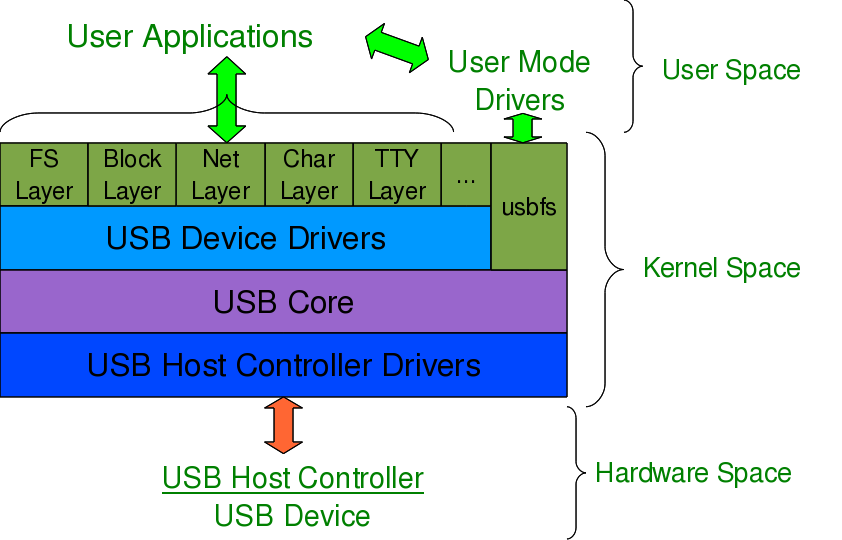

USB Drivers in Linux
This eleventh article, which is part of the series on Linux device drivers, gets you started with writing your first USB driver in Linux.
Pugs’ pen drive was the device, Shweta was playing with, when both of them sat down to explore the world of USB drivers in Linux. The fastest way to get hang of one, the usual Pugs’ way, was to pick up a USB device and write a driver for it to experiment with. So, they chose pen drive aka USB stick, available at hand. It was JetFlash from Transcend with vendor ID 0x058f and product ID 0x6387.
USB device detection in Linux
Whether a driver of a USB device is there or not on a Linux system, a valid USB device would always get detected at the hardware and kernel spaces of a USB-enabled Linux system. A valid USB device is a device designed and detected as per USB protocol specifications. Hardware space detection is done by the USB host controller – typically a native bus device, e.g. a PCI device on x86 systems. The corresponding host controller driver would pick and translate the low-level physical layer information into higher level USB protocol specific information. The USB protocol formatted information about the USB device is then populated into the generic USB core layer (usbcore driver) in the kernel space, thus enabling the detection of a USB device in the kernel space, even without having its specific driver.
After this, it is up to the various drivers, interfaces, and applications (which are dependent on the various Linux distributions), to have the user space view of the detected devices. Figure 17 shows a top to bottom view of USB subsystem in Linux. A basic listing of all detected USB devices can be obtained using the lsusb command, as root. Figure 18 shows the same, without and with the pen drive being inserted into the system. A -v option to lsusb provides detailed information. In many Linux distributions like Mandriva, Fedora, … usbfs driver is loaded as part of the default configuration. This enables the detected USB device details to be viewed in a more techno-friendly way through the /proc window using cat /proc/bus/usb/devices. Figure 19 shows a typical snippet of the same, clipped around the pen drive specific section. The complete listing basically contains such sections, each for one of the valid USB devices detected on the Linux system.



Decoding a USB device section
To further decode these sections, a valid USB device needs to be understood first. All valid USB devices contain one or more configurations. A configuration of a USB device is like a profile, where the default one is the commonly used one. As such, Linux supports only one configuration per device – the default one. For every configuration, the device may have one or more interfaces. An interface corresponds to the functionality provided by the device. There would be as many interfaces as the number of independent functionalities provided by the device. So, say an MFD (multi-function device) USB printer can do printing, scanning, and faxing, then it most likely would have at least three interfaces – one for each of the functionalities. So, unlike other device drivers, a USB device driver is typically associated/written per interface, rather than the device as a whole – meaning one USB device may have multiple device drivers. Though definitely one interface can have a maximum of one driver only.
Moreover, it is okay and common to have a single USB device driver for all the interfaces of a USB device. The “Driver=…” entry in the proc window output (Figure 19) shows the interface is to driver mapping – a “(none)” indicating no associated driver. For every interface, there would be one or more end points. An endpoint is like a pipe for transferring information either into or from the interface of the device, depending on the functionality. Depending on the type of information, the endpoints have four types:
- Control
- Interrupt
- Bulk
- Isochronous
As per USB protocol specification, all valid USB devices have an implicit special control endpoint zero, the only bi-directional endpoint. Figure 20 shows the complete pictorial representation of a valid USB device, based on the above explanation.
Coming back to the USB device sections (Figure 19), the first letter on each line represents the various parts of the USB device specification just explained. For example, D for device, C for configuration, I for interface, E for endpoint, etc. Details about them and various others are available under the kernel source Documentation/usb/proc_usb_info.txt

The USB pen drive driver registration
“Seems like there are so many things to know about the USB protocol to be able to write the first USB driver itself – device configuration, interfaces, transfer pipes, their four types, and so many other symbols like T, B, S, … under a USB device specification”, sighed Shweta. “Yes, but don’t you worry – all these can be talked in detail, later. Let’s do the first thing first – get our pen drive’s interface associated with our USB device driver (pen_register.ko)”, consoled Pugs. Like any other Linux device driver, here also we need the constructor and the destructor – basically the same driver template that has been used for all the drivers. Though the content would vary as this is a hardware protocol layer driver, i.e. a horizontal driver unlike a character driver, which was one of the vertical drivers, discussed so far. And the difference would be that instead of registering with & unregistering from VFS, here we would do that with the corresponding protocol layer – the USB core in this case; instead of providing a user space interface like a device file, it would get connected with the actual device in the hardware space. The USB core APIs for the same are as follows (prototyped in <linux/usb.h>):
int usb_register(struct usb_driver *driver);
void usb_deregister(struct usb_driver *);
As part of the usb_driver structure, the fields to be provided are the driver’s name, ID table for auto-detecting the particular device and the 2 callback functions to be invoked by USB core during hot-plugging and hot-removal of the device, respectively. Putting it all together, pen_register.c would look like:
#include <linux/module.h>
#include <linux/kernel.h>
#include <linux/usb.h>
static int pen_probe(struct usb_interface *interface, const struct usb_device_id *id)
{
printk(KERN_INFO "Pen drive (%04X:%04X) plugged\n", id->idVendor,
id->idProduct);
return 0;
}
static void pen_disconnect(struct usb_interface *interface)
{
printk(KERN_INFO "Pen drive removed\n");
}
static struct usb_device_id pen_table[] =
{
{ USB_DEVICE(0x058F, 0x6387) },
{} /* Terminating entry */
};
MODULE_DEVICE_TABLE (usb, pen_table);
static struct usb_driver pen_driver =
{
.name = "pen_driver",
.id_table = pen_table,
.probe = pen_probe,
.disconnect = pen_disconnect,
};
static int __init pen_init(void)
{
return usb_register(&pen_driver);
}
static void __exit pen_exit(void)
{
usb_deregister(&pen_driver);
}
module_init(pen_init);
module_exit(pen_exit);
MODULE_LICENSE("GPL");
MODULE_AUTHOR("Anil Kumar Pugalia <email@sarika-pugs.com>");
MODULE_DESCRIPTION("USB Pen Registration Driver");
Then, the usual steps for any Linux device driver may be repeated:
- Build the driver (.ko file) by running
make - Load the driver using
insmod - List the loaded modules using
lsmod - Unload the driver using
rmmod
But surprisingly the results wouldn’t be as expected. Check for dmesg and the proc window to see the various logs and details. Not because USB driver is different from a character driver. But there’s a catch. Figure 19 shows that the pen drive has one interface (numbered 0), which is already associated with the usual usb-storage driver. Now, in order to get our driver associated with that interface, we need to unload the usb-storage driver (i.e. rmmod usb-storage) after plugging in the pen drive, and then load our driver. Once this sequence is followed, the results would be as expected. Figure 21 shows a glimpse of the possible logs and proc window snippet. Repeat hot-plugging in and hot-plugging out the pen drive to observe the probe and disconnect calls in action – but don’t forget unloading the usb-storage driver, every time you plug in the pen driver.

Summing up
“Finally!!! Something into action.”, relieved Shweta. “But seems like there are so many things around (like the device ID table, probe, disconnect, …), yet to be assimilated and understood to get a complete USB device driver, in place”, she continued. “Yes, you are right. Let’s take them one by one, with breaks”, replied Pugs taking a stretching break.
Notes
- Make sure that you replace the vendor id & device id in the above code examples by the ones of your pen drive.
- One may wonder, as how does the usb-storage get autoloaded. The answer lies in the module autoload rules written down in the file
/lib/modules/<kernel_version>/modules.usbmap. If you are an expert, you may comment out the corresponding line, for it to not get autoloaded. And uncomment it back, once you are done with your experiments. - In latest distros, you may not find the detailed description of the USB devices using
cat /proc/bus/usb/devices, as the/proc/bus/usb/itself has been deprecated. You can find the same detailed info usingcat /sys/kernel/debug/usb/devices– though you may needrootpermissions for the same. Also, if you do not see any file under/sys/kernel/debug(even as root), then you may have to first mount the debug filesystem, as follows:mount -t debugfs none /sys/kernel/debug